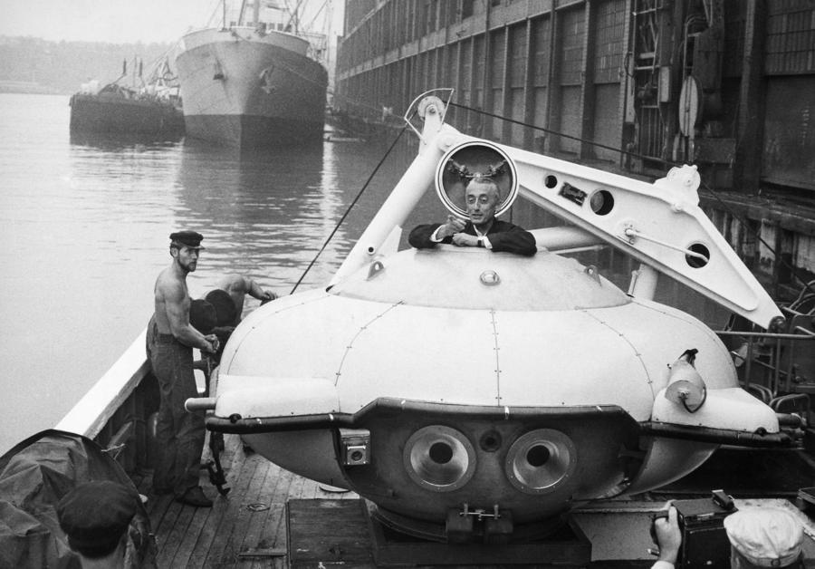

Captain Jacques-Yves Cousteau left his mark forever on the planet and the oceans. When Cousteau and his teams embarked aboard Calypso to explore the world, no one yet knew about the effects of pollution, over-exploitation of resources and coastal development. The films of Calypso’s adventures drew the public’s attention to the potentially disastrous environmental consequences of human negligence. Cousteau, through his life and his work, was a major player in the environmental movement.
Jacques Cousteau
Underwater explorer
